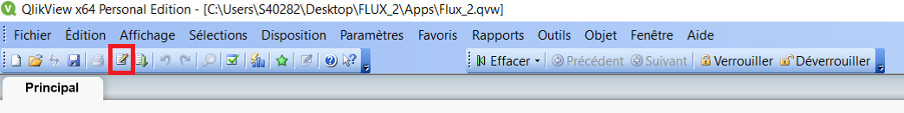
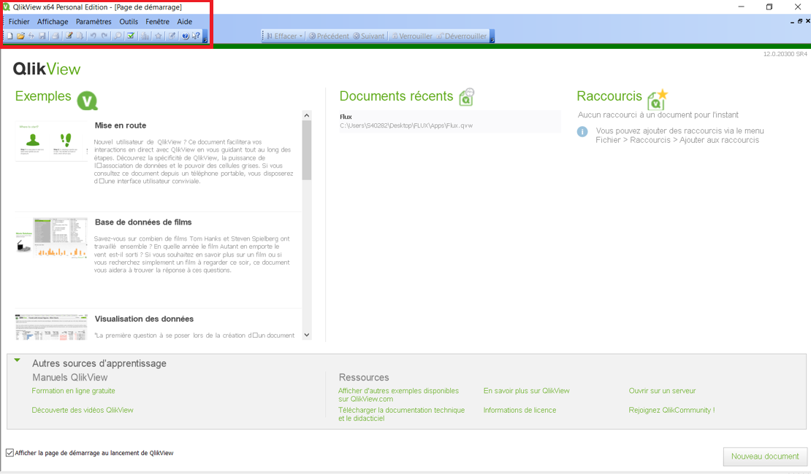
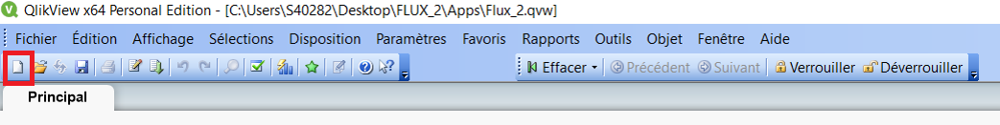
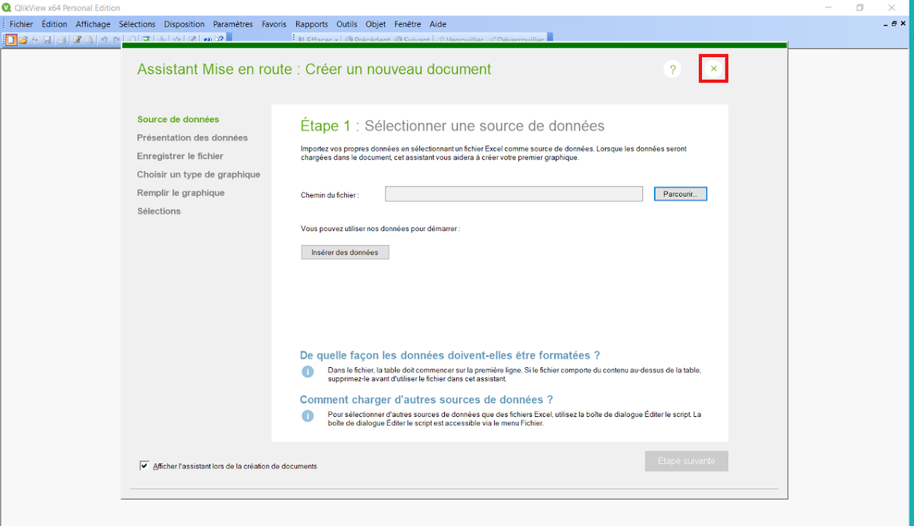
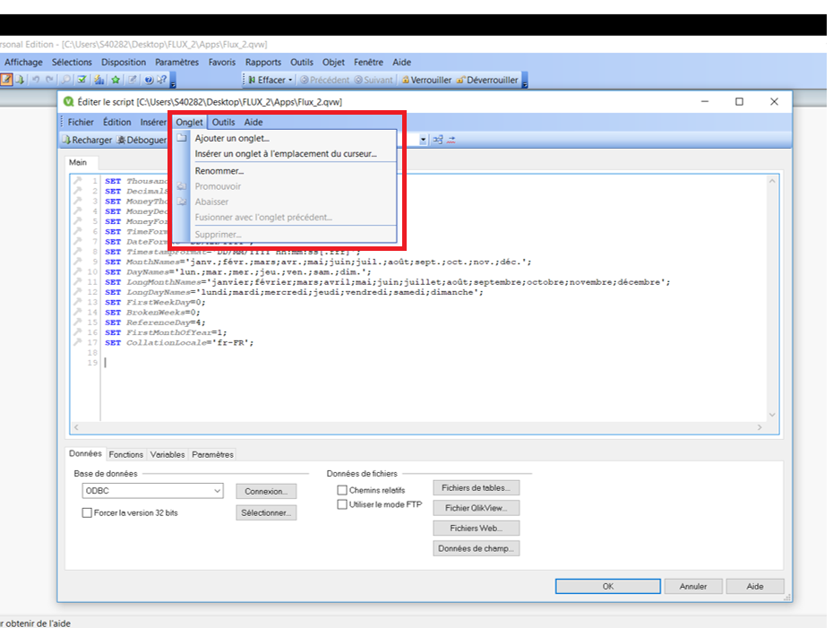
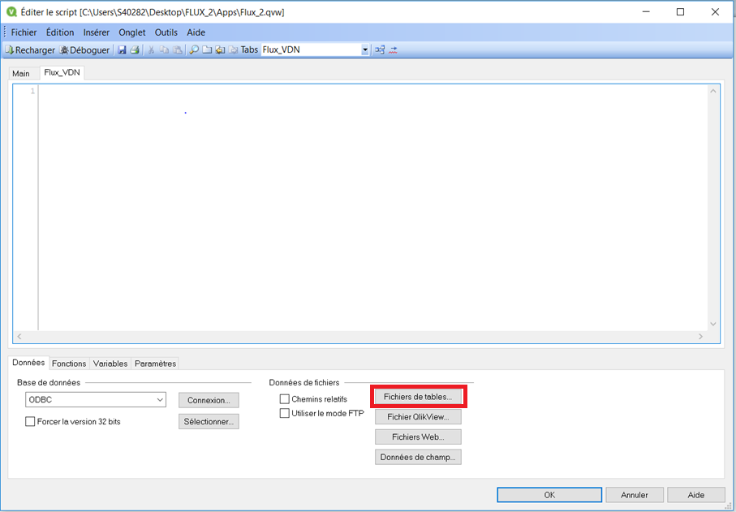
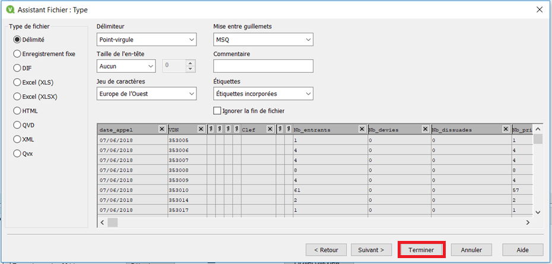
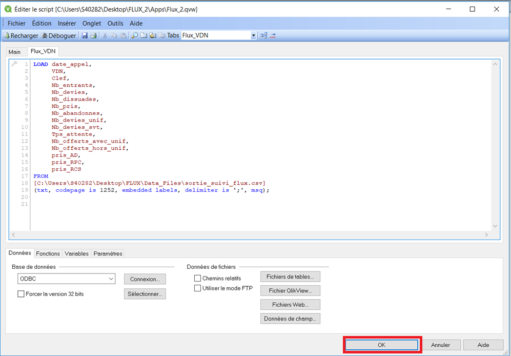
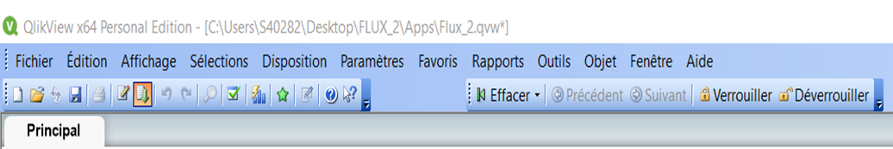
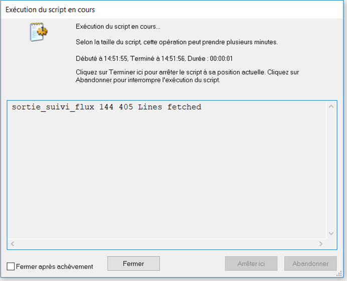

Dataviz
Tutoriels d'appréhension à la dataviz
-
-
QLIKVIEW
- Créer une application
- Charger une base
- Créer un objet
- Fonctions complexes : set analysis
- Mise en forme des nombres : fonction "num()"
- Appeler une variable calculée
- Dynamiser les sources, dimensions et expressions calculées
- Gérer la temporalité : Master Calendar
- Application à plusieurs dimensions de sélections : États alternatifs
- Qlik Sense
-
Créer une application
Arborescence des dossiers
- Il ne faut pas d'espace
- Il ne faut pas d'accent
- Dossier maître : nomApplication
- Sous-dossier avec l'application : apps
- Sous-dossier avec les données : dataFiles
- Sous-dossier avec les scripts : include
Création de l'application
- Cliquer sur l'icone "Nouveau"
- Fermer la fenêtre "Assistant Mise en route"
- Enregistrer le document (CTRL+S) dans le sous-dossier "apps"
Charger une base
L'éditeur de script et son interface d'importation

- Ouvrir l'éditeur de script (CTRL+E)
- Créer un nouvel onglet :
- Onglet
- Ajouter un onglet...
- Donner un nom cohérent à l'objet
Le visionneur de table
- Importer le jeu de données :
- Fichiers de tables...
- Sélectionner le fichier de données
- Vérifier si les paramètres d'importation sont corrects
- Supprimer les colonnes inutiles
- Terminer
- Le code d'imporation est généré automatiquement
- Ok
- Exécuter les scripts
- Recharger
- Attendre que le rechargement se fasse, s'il n'y a pas d'erreur, a fenêtre va se fermer toute seule
Créer un objet
Objets texte, image et graphique
Faire un comptage : connaître SQL
Filtrer les données
Les listes de sélection
Nom de l'objet
Conteneur
QLIKVIEW
Attention aux noms donnés aux différents dossiers et fichiers de l'application :
Le fichier sera enregistré sous le format .qvw.
Pour chaque action que nous souhaitons réaliser, nous allons créer un nouvel onglet.
  -
AUTRE?